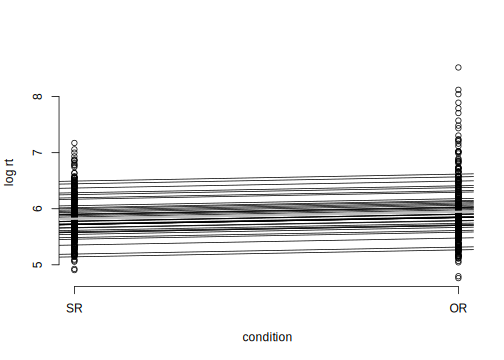
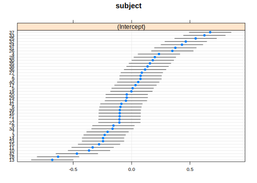

3.5 Linear mixed models
We return to our subject and object relative clause data from English (Grodner and Gibson, Expt 1). First we load the data as usual, define relative clause type as a sum coded predictor, and create a new column called so that represents the contrast coding (\(\pm 1\) sum contrasts), and a column that holds log-transformed reading time.
gg05e1 <- read.table("data/grodnergibsonE1crit.txt",
header = TRUE)
gg05e1$so <- ifelse(gg05e1$condition == "objgap", 1,
-1)
gg05e1$logrt <- log(gg05e1$rawRT)Recall that these data have multiple measurements from each subject for each condition:
## subject
## condition 1 2 3 4 5 6 7 8 9 10 11 12 13 14 15 16 17 18
## objgap 8 8 8 8 8 8 8 8 8 8 8 8 8 8 8 8 8 8
## subjgap 8 8 8 8 8 8 8 8 8 8 8 8 8 8 8 8 8 8
## subject
## condition 19 20 21 22 23 24 25 26 27 28 29 30 31 32 33
## objgap 8 8 8 8 8 8 8 8 8 8 8 8 8 8 8
## subjgap 8 8 8 8 8 8 8 8 8 8 8 8 8 8 8
## subject
## condition 34 35 36 37 38 39 40 41 42
## objgap 8 8 8 8 8 8 8 8 8
## subjgap 8 8 8 8 8 8 8 8 8We can visualize the different responses of subjects:
## `geom_smooth()` using formula 'y ~ x'
It’s clear that different subjects have different effects of the relative clause manipulation: some slopes are positive sloping, some are flat, and some are negatively sloping. There is between-subject variability in the relative clause effect.
Given these differences between subjects, you could fit a separate linear model for each subject, collect together the intercepts and slopes for each subject, and then check if the slopes are significantly different from zero. There is a function in the package that computes separate linear models for each subject: lmList.
One can extract the intercept and slope estimates for each subject. For example, for subject 1:
## (Intercept) so
## 5.76962 0.04352One can plot the individual lines for each subject, as well as the fit of a simple linear model m0 for all the data taken together; this will show how each subject deviates in intercept and slope from the model m0’s intercept and slope.

To find out if there is an effect of relative clause type, we simply need to check whether the slopes of the individual subjects’ fitted lines taken together are significantly different from zero. A one-sample t-test will achieve this:
##
## One Sample t-test
##
## data: coef(lmlist.fm1)[2]
## t = 2.8, df = 41, p-value = 0.008
## alternative hypothesis: true mean is not equal to 0
## 95 percent confidence interval:
## 0.01745 0.10658
## sample estimates:
## mean of x
## 0.06202The above test is exactly the same as the paired t-test and the varying intercepts linear mixed model that we fit in the last chapter using the by-subject aggregated data:
bysubj <- aggregate(log(rawRT) ~ subject + condition,
mean, data = gg05e1)
colnames(bysubj)[3] <- "logrt"
t.test(logrt ~ condition, bysubj, paired = TRUE)$statistic## t
## 2.81## compare with linear mixed model:
summary(lmer(logrt ~ condition + (1 | subject), bysubj))$coefficients[2,
]## Estimate Std. Error t value
## -0.12403 0.04414 -2.81021The above lmList model we just fit is called repeated measures regression. We now look at how to model unaggregated data using the linear mixed model. Incidentally, this repeated measures regression model is now only of historical interest, and useful only for understanding the linear mixed model, which is the modern standard approach.
We turn next to three main types of linear mixed model; other variants will be introduced in later chapters.
3.5.1 Model type 1: Varying intercepts
The linear mixed model does something related to the above by-subject fits, but with some crucial twists, as we see below. In the model shown below, the statement
\[\begin{equation} (1 \mid \hbox{subject}) \end{equation}\]
adjusts the grand mean estimates of the intercept by a term (a number) for each subject.
Notice that we did not aggregate the data.
Here is the abbreviated output:
Random effects:
Groups Name Variance Std.Dev.
subject (Intercept) 0.09983 0.3160
Residual 0.14618 0.3823
Number of obs: 672, groups: subject, 42
Fixed effects:
Estimate Std. Error t value
(Intercept) 5.88306 0.05094 115.497
so 0.06202 0.01475 4.205One thing to notice is that the coefficients (intercept and slope) of the fixed effects of the above model are identical to those in the linear model m0 above. What is different between the linear model and the linear mixed model is the standard error. In the latter, the standard error is determined by more than one source of variance, as we explain below.
The intercept adjustments for each subject can be viewed by typing:
## [1] -0.103928 0.077195 -0.230621 0.234198 0.008828
## [6] -0.095363 -0.205571 -0.155371 0.075944 -0.364367Here is another way to summarize the adjustments to the grand mean intercept by subject. The error bars represent 95% confidence intervals.
## $subject
3.5.2 The formal statement of the varying intercepts model
The model m0.lmer above prints out the following type of linear model. \(i\) indexes subject, and \(j\) indexes items.
Once we know the subject id and the item id, we know which subject saw which condition:
## subject item condition rawRT so logrt
## 6 1 1 objgap 320 1 5.768The mathematical form of the linear mixed model is:
\[\begin{equation} y_{ij} = \beta_0 + u_{0i}+\beta_1\times so_{ij} + \varepsilon_{ij} \end{equation}\]
The only new thing here beyond the linear model we saw earlier is the by-subject adjustment to the intercept. These by-subject adjustments to the intercept \(u_{0i}\) are assumed by lmer to come from a normal distribution centered around 0:
\[\begin{equation} u_{0i} \sim Normal(0,\sigma_{u0}) \end{equation}\]
The ordinary linear model m0 has one intercept \(\beta_0\) for all subjects, whereas this linear mixed model with varying intercepts m0.lmer has a different intercept (\(\beta_0 + u_{0i}\)) for each subject \(i\).
We can visualize the adjustments for each subject to the intercepts as shown below.

An important point is that in this model there are two variance components or sources of variance (cf. the linear model, which had only one):
- \(u_0 \sim Normal(0,\sigma_{u0})\)
- \(\varepsilon \sim Normal(0,\sigma)\)
These two standard deviations determine the standard error of the \(\beta_1\) slope parameter.
3.5.3 Model type 2: Varying intercepts and slopes, without a correlation
Unlike the figure associated with the lmlist.fm1 model above, which also involves fitting separate models for each subject, the model m0.lmer assumes different intercepts for each subject but the same slope.
We can choose to fit different intercepts as well as different slopes for each subject. To achieve this, assume now that each subject’s slope is also adjusted by subject:
\[\begin{equation} y_{ij} = \beta_0 + u_{0i}+(\beta_1+u_{1i})\times so_{ij} + \varepsilon_{ij} \end{equation}\]
That is, we additionally assume that \(u_{1i} \sim Normal(0,\sigma_{u1})\). The lmer notation for fitting separate intercepts and slopes is (1+so||subject). We will just explain what the double vertical bars represent.
The output of this model will now show that there are not two but three sources of variability. These are:
- \(u_0 \sim Normal(0,\sigma_{u0})\)
- \(u_1 \sim Normal(0,\sigma_{u1})\)
- \(\varepsilon \sim Normal(0,\sigma)\)
In particular, the model estimates the following standard deviations:
- \(\hat\sigma_{u0}=0.317\)
- \(\hat\sigma_{u0}=0.110\)
- \(\hat\sigma = 0.365\).
Random effects:
Groups Name Variance Std.Dev.
subject (Intercept) 0.1006 0.317
subject.1 so 0.0121 0.110
Residual 0.1336 0.365
Number of obs: 672, groups: subject, 42
Fixed effects:
Estimate Std. Error t value
(Intercept) 5.8831 0.0509 115.50
so 0.0620 0.0221 2.81These fits for each subject are visualized below (the gray line shows the model with a single intercept and slope, i.e., our old model m0):

3.5.3.1 Comparing lmList model with the varying intercepts model
Compare this model with the lmlist.fm1 model we fitted earlier:

What is striking is that each subject’s estimated best fit line is “smooothed out” compared to the lmList fits. This aspect of the linear mixed model is called shrinkage; we return to this point presently.
3.5.3.2 Visualizing random effects
As before, it is instructive to visualize the individual level adjustments to the intercept and slope:
## $subject
What this is showing is wide variability in the mean reading times between subjects, but very little variation in the slope between subjects.
3.5.3.3 The formal statement of varying intercepts and varying slopes linear mixed model
Here is the full statement of the varying intercept and slopes model. Again, i indexes subjects, j items.
\[\begin{equation} y_{ij} = \beta_0 + u_{0i}+(\beta_1+u_{1i})\times so_{ij} + \varepsilon_{ij} \end{equation}\]
As mentioned before, there are now three variance components:
- \(u_0 \sim Normal(0,\sigma_{u0})\)
- \(u_1 \sim Normal(0,\sigma_{u1})\)
- \(\varepsilon \sim Normal(0,\sigma)\)
3.5.3.4 Crossed random effects for subjects and for items
Now, one interesting fact about the varying intercepts and slopes model is that it doesn’t capture all the sources of variance yet. The items also contribute sources of variance: just like subjects, items may also have different intercepts and slopes.
Notice that subjects and items are fully crossed: each subject sees each item once.
## item
## subject 1 2 3 4 5 6 7 8 9 10 11 12 13 14 15 16
## 1 1 1 1 1 1 1 1 1 1 1 1 1 1 1 1 1
## 2 1 1 1 1 1 1 1 1 1 1 1 1 1 1 1 1
## 3 1 1 1 1 1 1 1 1 1 1 1 1 1 1 1 1
## 4 1 1 1 1 1 1 1 1 1 1 1 1 1 1 1 1
## 5 1 1 1 1 1 1 1 1 1 1 1 1 1 1 1 1
## 6 1 1 1 1 1 1 1 1 1 1 1 1 1 1 1 1Linear mixed model with crossed subject and items random effects can be defined with the following syntax:
Analogously to the preceding example, now there are five variance components:
Random effects:
Groups Name Variance Std.Dev.
subject (Intercept) 0.10090 0.3177
subject.1 so 0.01224 0.1106
item (Intercept) 0.00127 0.0356
item.1 so 0.00162 0.0402
Residual 0.13063 0.3614
Number of obs: 672, groups: subject, 42; item, 16
Fixed effects:
Estimate Std. Error t value
(Intercept) 5.8831 0.0517 113.72
so 0.0620 0.0242 2.56The item intercept and slope adjustments can be visualized as well. Notice that there is a lot less item-level variation; this is often the case in planned experiments like this one, where the experimental items are carefully constructed to vary as little as possible.

One thing missing in the above models is any assumption about the relationship between the intercept and slope adjustements by subject and by item. It is possible that the intercept and slope adjustments are correlated: e.g., there could be a theoretical prediction that says that the slower a subject’s average reading time, the larger the difference between object and subject relative clause reading times. This kind of prediction can be tested by testing what the correlation is between the varying intercepts and slopes. We turn to this model next.
3.5.4 Model type 3: Varying intercepts and varying slopes, with correlation
A correlation can be introduced between the intercept and slope adjustments by using a single vertical bar instead of two vertical bars in the random effects structure:
## boundary (singular) fit: see ?isSingularTo understand what this model is doing, we have to recall what a bivariate/multivariate distribution is.
Random effects:
Groups Name Variance Std.Dev. Corr
subject (Intercept) 0.10103 0.3178
so 0.01228 0.1108 0.58
item (Intercept) 0.00172 0.0415
so 0.00196 0.0443 1.00 <= degeneracy
Residual 0.12984 0.3603
Number of obs: 672, groups: subject, 42; item, 16
Fixed effects:
Estimate Std. Error t value
(Intercept) 5.8831 0.0520 113.09
so 0.0620 0.0247 2.51The correlations (0.58 and 1.00) you see in the model output below are the correlations between the varying intercepts and slopes for subjects and for items. Notice that the variance covariance matrix for items is degenerate: its correlation is 1. This matrix cannot be inverted.
When the correlation is +1 or -1 or near these numbers, this means that the optimizer in lme4 is unable to estimate the correlation parameter, usually due to there not being enough data. If you are in such a situation, you are better off not trying to estimate this parameter with the data you have, and instead fitting one of the simpler models. We will return to this point when discussing model selection. For further discussion, see Barr et al. (2013), Bates et al. (2015), and Matuschek et al. (2017).
3.5.4.1 Formal statement of varying intercepts and varying slopes linear mixed model with correlation
As usual, i indexes subjects, j items. The vector so is the sum-coded factor levels: +1 for object relatives and -1 for subject relatives. The only new thing in this model is the item-level effects, and the specification of the variance-covariance matrix for subjects and items, in order to include the correlation parameters.
\[\begin{equation} y_{ij} = \alpha + u_{0i} + w_{0j} + (\beta + u_{1i} + w_{1j}) \times so_{ij} + \varepsilon_{ij} \end{equation}\]
where \(\varepsilon_{ij} \sim Normal(0,\sigma)\) and
\[\begin{equation}\label{eq:covmatLM} \Sigma_u = \begin{pmatrix} \sigma _{u0}^2 & \rho _{u}\sigma _{u0}\sigma _{u1}\\ \rho _{u}\sigma _{u0}\sigma _{u1} & \sigma _{u1}^2\\ \end{pmatrix} \quad \Sigma _w = \begin{pmatrix} \sigma _{w0}^2 & \rho _{w}\sigma _{w0}\sigma _{w1}\\ \rho _{w}\sigma _{w0}\sigma _{w1} & \sigma _{w1}^2\\ \end{pmatrix} \end{equation}\]
\[\begin{equation}\label{eq:jointpriordistLM} \begin{pmatrix} u_0 \\ u_1 \\ \end{pmatrix} \sim \mathcal{N} \left( \begin{pmatrix} 0 \\ 0 \\ \end{pmatrix}, \Sigma_{u} \right), \quad \begin{pmatrix} w_0 \\ w_1 \\ \end{pmatrix} \sim \mathcal{N}\left( \begin{pmatrix} 0 \\ 0 \\ \end{pmatrix}, \Sigma_{w} \right) \end{equation}\]
3.5.4.2 Visualizing the random effects
One can visualize the correlation between intercepts and slopes by subjects. The positive correlation of 0.58 between subject intercept and slope adjustments implies that slower subjects show larger effects. However, the dotplot below doesn’t show a convincing pattern:

The correlation pattern is easier to see if we plot the slope adjustments against the intercept adjustments.
plot(ranef(m3.lmer)$subject[, 1], ranef(m3.lmer)$subject[,
2], xlab = "Intercept adjustments (subject)", ylab = "Slope adjustments")
When we talk about hypothesis testing, we will look at what inferences we can draw from this correlation.
The dotplot showing the item-level effects shows a perfect correlation between intercept and slope adjustments, but as mentioned above these are from a degenerate variance covariance matrix and not meaningful.

References
Barr, Dale J, Roger Levy, Christoph Scheepers, and Harry J Tily. 2013. “Random Effects Structure for Confirmatory Hypothesis Testing: Keep It Maximal.” Journal of Memory and Language 68 (3). Elsevier: 255–78.
Bates, Douglas M., Reinhold Kliegl, Shravan Vasishth, and Harald Baayen. 2015. “Parsimonious Mixed Models.”
Matuschek, Hannes, Reinhold Kliegl, Shravan Vasishth, R. Harald Baayen, and Douglas M. Bates. 2017. “Balancing Type I Error and Power in Linear Mixed Models.” Journal of Memory and Language 94: 305–15. https://doi.org/10.1016/j.jml.2017.01.001.